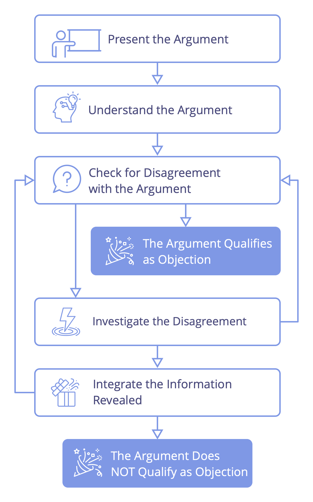
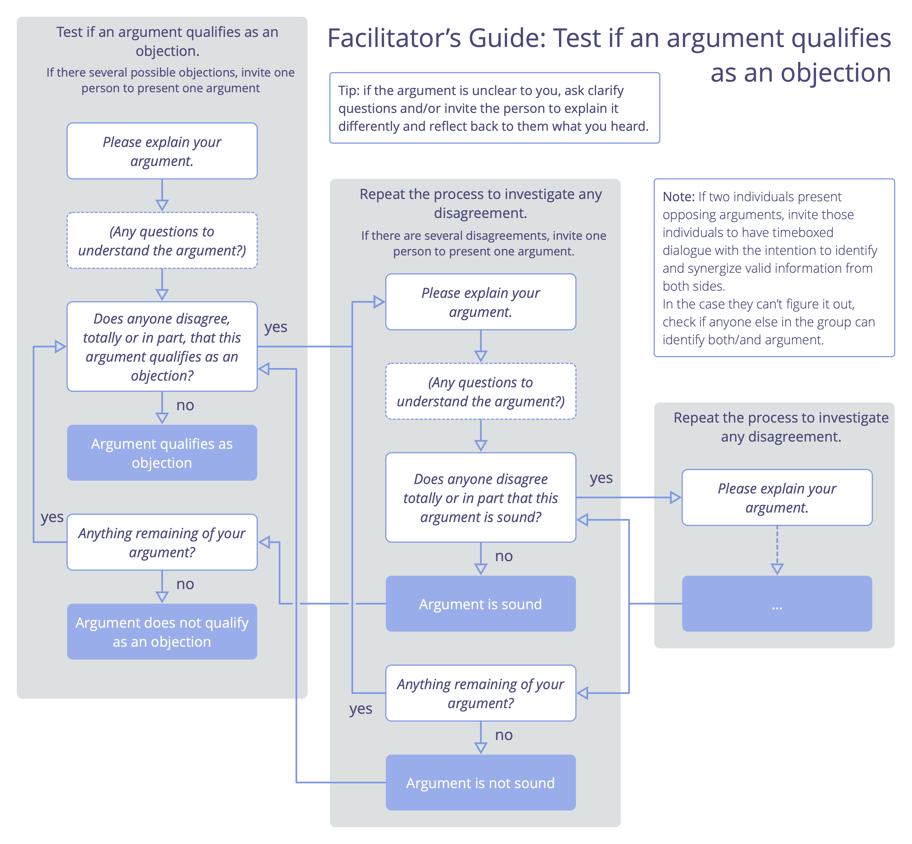

Comprobar si los argumentos califican como objeciones
Cuando alguien plantea una posible objeción (un argumento para cambiar algo), comprueba que el argumento revela cómo dejar las cosas tal y como están conllevaría, o podría conllevar, consecuencias que quieres evitar, o que te informa de una manera valiosa de mejorar cómo avanzar en el logro de tus objetivos.
Explora y mejora cada argumento según sea necesario para identificar concepciones erróneas o malentendidos, y para eliminar aspectos del argumento que estén basados meramente en suposiciones, o en una preferencia u opinión personales. Si determinas que lo que queda del argumento califica como una objeción, entonces pasa a resolver la objeción.
Trabajar con argumentos
Para mantener un diálogo productivo es útil entender que todo argumento está compuesto por una serie de afirmaciones: cada argumento contiene uno o más supuestos, que se ofrecen como razones para aceptar una conclusión.
Cada uno de los supuestos de un argumento puede ser escudriñado individualmente, y cuando se ha hecho eso, podemos analizar si la conclusión que se desprende de esos supuestos pasó bien la prueba o no.
Ayuda presentar el argumento de una manera que haga que los supuestos y la conclusión sean obvios, por ejemplo, de este modo:
1 Primer supuesto
2 Segundo supuesto
– – – – – – – –
Por lo tanto: Conclusión
Persona facilitadora: invita al grupo a listar los supuestos y explicar la conclusión, y luego se ocupa a partir de ahí.
A veces puede ser útil anotar esta información en un papelógrafo o pizarra digital, o incluso como texto en un chat.
Con un argumento expuesto de esta manera, el grupo puede dirigir preguntas para entender el argumento de acuerdo a cada afirmación específica, y señalar cualquier afirmación con la que no estén de acuerdo. Cada desacuerdo puede presentarse utilizando este mismo método recién mencionado.
Cuando se esté de acuerdo sobre un supuesto, marca eso como hecho, cuando el diálogo revela una premisa oculta, simplemente añádelo a la lista. Si un supuesto resulta no ser válido, elimínalo. Anotar el progreso de esta manera ayuda a asegurar que todos estén en la misma página con el estado actual de un argumento.
Cuando el acuerdo parece inalcanzable: en un entorno grupal, a veces puede resultar imposible resolver inmediatamente un desacuerdo sobre una afirmación específica relativa a una posible objeción, a menudo porque el grupo carece de datos, conocimientos o experiencia. Cuando se produce una situación así, una forma de abordarla es replantear la posible objeción en torno a esa incertidumbre específica. Si el argumento enmendado califica como una objeción, puede resolverse enmendando la propuesta con una disposición añadida para establecer los hechos sobre la afirmación controvertida.
Un proceso para probar si un argumento califica como objeción
Este proceso para probar si los argumentos califican como objeciones, es una variación del patrón de toma de decisiones razonada.
Paso 1: Presentar el argumento que se expone como una posible objeción.
Paso 2: Comprender el argumento.
Paso 3: Comprobar si hay algún desacuerdo cuyo argumento pretende calificar como objeción (p.ej., la gente puede indicarlo con una mano levantada). Los motivos del desacuerdo se presentan en el siguiente paso.
- Si no hay desacuerdo, el argumento califica como objeción y ahora puedes proceder a resolver la objeción.
- De lo contrario, toma un posible desacuerdo cada vez, y:
Paso 4: Investiga el razonamiento detrás del desacuerdo:
- Si demuestra que el argumento original es falso (total o parcialmente) o que (a pesar de ser sólido), no califica como una objeción, continúa con el siguiente paso.
- De lo contrario, regresa al paso 3 para comprobar si hay más desacuerdos.
Paso 5: Integra la información revelada en el paso anterior con el argumento original:
- Si el argumento original todavía tiene alguna validez, mejóralo y luego continúa con el paso 3 para ver si hay algún desacuerdo con el argumento mejorado.
- De lo contrario, has demostrado que el argumento original no es una objeción.

A continuación encontrarás más orientaciones sobre cómo realizar cada paso. Como con todos los patrones de S3, tu enfoque para probar si los argumentos califican como objeciones puede ser ajustado para encajar en tu contexto.
Paso 1 Presentar el argumento
Presentar el argumento que se propone como una posible objeción.
La persona facilitadora le pregunta a la persona con la posible objeción: Por favor, explique su argumento.
Paso 2: Entender el argumento
Asegúrate de que todos entienden la propuesta.
La persona facilitadora le pregunta: a todos ¿Alguna pregunta para entender mejor el argumento?
Todos: Si no lo entiendes, interviene y haz una pregunta clarificadora. La persona que presenta el argumento explica más, hasta que todo el mundo lo entienda.
Paso 3 Comprobar si hay desacuerdo con el argumento
La gente considera el argumento y luego indica si está en desacuerdo.
Todos: reflexiona por ti mismo si crees que el argumento presentado califica como una objeción o no.
Nota: Si un grupo es nuevo en el proceso, la persona facilitadora podría invitar explícitamente a todos a reflexionar para sí mismos: ¿Crees que este argumento califica como una objeción?
El facilitador pregunta: ¿Alguien no está de acuerdo total o parcialmente en que este argumento califica como una objeción? Si es así, por favor levanta la mano.
- Si nadie no está de acuerdo, el argumento califica como objeción y ahora puedes proceder a resolver la objeción.
- Si alguien no está de acuerdo: continúa con el siguiente paso.
Paso 4: Investiga el razonamiento detrás del desacuerdo
Elige una de las personas con una mano levantada y usa el mismo proceso para comprobar argumentos calificados como objeciones, determina si sus razones para no estar de acuerdo son válidas o no:
4.1. Presenta la razón del desacuerdo: Invitación de la persona facilitadora: Por favor, explica por qué el argumento original es total o parcialmente incorrecto.
4.2. Comprende el motivo del desacuerdo: Invitación de la persona facilitadora: ¿Hay alguna pregunta para entender este argumento?
4.3. Comprueba si hay desacuerdo sobre el desacuerdo: La persona facilitadora pregunta: ¿Hay alguien que no esté de acuerdo con el motivo de este desacuerdo, total o parcialmente?
- Si nadie está en desacuerdo: el argumento para el desacuerdo se considera válido. Ir al paso 5.
- Si alguien no está de acuerdo: investiga el razonamiento detrás del desacuerdo (ver paso 4) hasta que llegues a un argumento con el que nadie esté en desacuerdo. Luego toma cada argumento precedente por vez – comprobando si queda algo y/o si necesita ser cambiado o abandonado (ves al paso 5 para ver las pautas sobre cómo hacer esto) – hasta que llegues de nuevo al desacuerdo inicial.
Paso 5: Integra la información revelada en el paso anterior con el argumento original
La persona facilitadora le pregunta a la persona que presentó el argumento original: “¿Queda algo de tu argumento?”
La persona que aportó el argumento original tiene la opción de mejorar, replantear o reformular su argumento, o abandonarlo por completo, si no queda nada de él.
- Si el argumento original todavía tiene alguna validez, mejóralo y luego continúa con el paso 3 para ver si hay algún desacuerdo con el argumento mejorado.
- De lo contrario, has demostrado que el argumento original no es una objeción.

